Robert Down


My name is Robert Down and I am running for FNSA President. I am a 28-year old, junior nursing student with a passion for helping others and a drive for excellence in all that I do. Allow me to tell you a bit about myself, and why I am running for president.
Nursing school has impacted my life in countless ways. I look back at the person I was just a few months ago during Intro to Nursing and wonder how I could have grown so much, so fast. I have seen my passion for emerging and developing populations become an integral part of who I am.
With a background in IT and a heart for those in need I have contributed software to OpenEMR, a royalty-free EMR solution deployed to over 115,000 practioners throughout the world. In January of this year I was elected to the Board of Directors for OEMR, the non-profit behind OpenEMR. I am now the secretary of this international, very diverse board working to bring together a broad range of ideas into a cohesive action plan.
I believe every life is sacred. This basic assumption guides my beliefs regarding war, famine, poverty, foreign and domestic aid, as well as aid within my own local community. I struggle to understand the relentless wars waged around the world, or the fact that a wide majority of the world lives in poverty. And while I know it is unrealistic to think I can end poverty, homelessness, or human trafficking by myself, I am convicted to help those most at-risk. To that end, I am currently a Disaster Action Team Lead for the American Red Cross responding to house fires, natrual disasters, and national tragedies.
Access to health care is a fundamental human right, and one aspect that defines the essence of humanity is the fact that we don't simply leave the sick or wounded behind to die; we come together as a collective to ensure those in need are granted a fighting chance. Embracing the role of an advocate, I have learned to use my voice to speak for those who may otherwise remain voiceless. I have also developed a considerable passion for informatics and developing license-free electronic medical records software for providers in developing countries. Focusing on the intersection of my information technology skills, role as a nurse-advocate, and empathy for emerging populations has helped me to become a more influential healthcare professional.


 

I am writing to express my wholehearted support for Robert Down’s application to the position of President of the Florida Nursing Student Association. As Robert’s direct supervisor at the American Red Cross, I have had the privilege of witnessing his compassion, dedication, and true belief in the mission of the American Red Cross. I have been impressed with his initiative in taking on roles with increasing responsibility, his work ethic and desire to assist in any manner he is able to, and his ability to remain positive regardless of the situation. Robert has become a valued leader within the American Red Cross Disaster Action Team, and I’m confident that he would bring his many skills and infectious positivity with him to the position as President of the Florida Nursing Student Association.
Kelsie Davis
Disaster Program Manager, American Red Cross

The Newman Civic Fellowship recognizes and supports community-committed students who have demonstrated an investment in finding solutions for challenges facing communities throughout the country. Read More
Robert is a committed leader. He responds to needs he sees in others and collaborates on ways to improve quality of life. His dedication to action and advocacy to serve the most vulnerable populations render him an exemplary candidate for the Newman Civic Fellows Award.
Dr. David Greenlaw
President, Adventist University of Health Sciences
OpenEMR is a free and open source electronic medical record software project. Robert has been a volunteer on the project since 2012. His contributions to the project are numerous and have included project administration, website administration, and code development. More recently, he has been instrumental in organizing a group effort to modernize OpenEMR's user interface, logo, and website.
The OEMR organization is a non-profit organization which supports the OpenEMR software project. Robert Down has been a Board Member of this organization since January of 2016 and has been an Officer of the Board (Secretary) since April of 2016. As an officer, he has been responsible for OEMR Board communications, mangement of corporation records, and recording of meetings. More recently, he has been organizing an effort to apply for grants.
Robert Down has been instrumental for both the OpenEMR software project and the OEMR non-profit organization. He has demonstrated leadership along with an ability to successfully manage and work in team environments with individuals of very different backgrounds.
Brady Miller